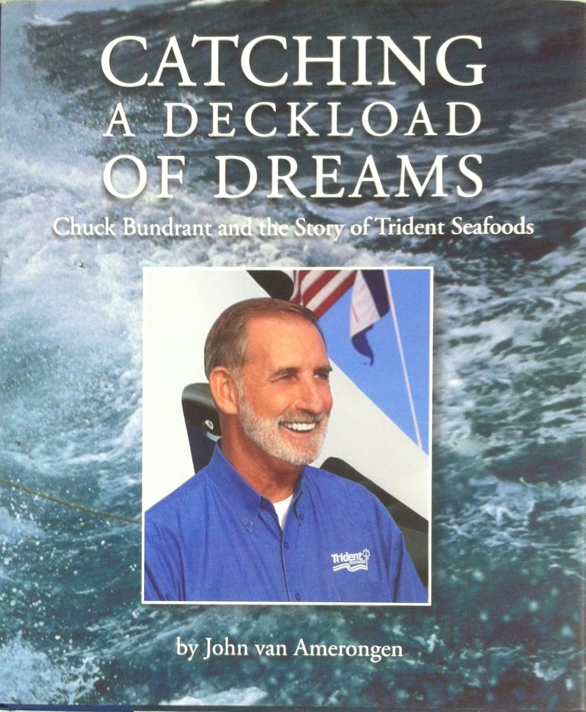

1961年冬天，一个十九岁的田纳西男孩查克·邦德兰特（Chuck Bundrant）揣着80美元，和三个被他说服退学的同伴挤进一辆1953年款福特旅行车，从中田纳西州立大学一路向西开往西雅图，然后北上阿拉斯加。他对大海一无所知，对渔业一窍不通，但他有一种罕见的本领——能让别人跟他一起去做他们原本绝不会做的事。
这本书讲述的，就是邦德兰特如何用接下来半个世纪的时间，将那个码头上露宿的穷小子的梦想，变成北美最大的垂直整合型海产企业Trident Seafoods的故事。
邦德兰特在阿拉斯加的头十二年，辗转于各种渔船之间打零工，捕帝王蟹、钓鲑鱼，从水手做到船长，把捕鱼和加工的每一个环节都摸透了。1973年，他与两位蟹农凯尔·内斯（Kaare Ness）和迈克·雅各布森（Mike Jacobson）合伙，三人凑钱建造了135英尺的"比利金号"（Billikin）。这艘船的革命性在于：它在甲板下安装了蟹肉蒸煮器和冷冻设备，实现了捕捞与加工的一体化——螃蟹出水即加工，不必再运回岸上交给中间商。这种"海上工厂"模式在阿拉斯加捕蟹业史无前例，也为Trident日后的垂直整合战略奠定了基因。
然而，帝王蟹并非邦德兰特的终极赌注。1976年，美国通过《渔业保护与管理法》（即后来的《马格努森-史蒂文斯法案》），将专属经济区扩展至200海里，将日本和苏联的远洋船队逐出阿拉斯加水域。邦德兰特敏锐地看到了这一历史性转折中的机会：阿拉斯加狭鳕（Alaska pollock）——当时被美国人视为"垃圾鱼"——的巨大产量突然向本土企业敞开了大门。1981年，他做出了职业生涯中最大胆的一次押注：在阿留申群岛的偏远火山岛阿库坦（Akutan）建造大型岸上加工厂，专门处理狭鳕。那里冬季风速可达160公里，条件极其恶劣，但距离渔场近在咫尺。他研究了日本人将狭鳕制成鱼糜（surimi）的技术，然后逐一说服美国快餐巨头将菜单上的真鳕（cod）替换为狭鳕。Long John Silver's的高管被请到阿库坦实地考察，尝到Trident的冷冻产品后以为吃的是鲜鱼，当场拍板合作。随后麦当劳的麦香鱼三明治也采用了Trident的狭鳕。一种曾被人嫌弃的鱼，就这样成了全美消费量最大的单一鱼种。
作者约翰·范·阿默朗根（John van Amerongen）在阿拉斯加渔业圈浸润了四十余年。他早年做过商业渔民和船匠，后来担任《阿拉斯加渔民杂志》（Alaska Fisherman's Journal）主编长达二十二年，见证了北太平洋渔业从外国船队主导到美国本土化的全过程。此后他加入Trident，负责传播与可持续发展事务。写作本书耗时四年，于2014年出版。范·阿默朗根说，他的写作目标是"让读者在桌边坐下"——在阿拉斯加的渔港酒馆里，总有一张属于大船长和行业巨头的桌子，故事在那里随酒杯倾倒而出，而他要做的，就是把那张桌子的一个座位留给读者。
邦德兰特于2021年10月在华盛顿州埃德蒙兹的家中去世，享年79岁。去世时他持有Trident约80%的股份，福布斯估算其身家约30亿美元。Trident当时年营收约26亿美元，在全球拥有约九千名员工和44处设施，产品销往近六十个国家，由他的儿子乔·邦德兰特（Joe Bundrant）自2013年起担任CEO。从80美元到30亿美元，从码头流浪汉到北美海产之王，邦德兰特的一生，是一个关于胆识、韧性与行业洞察力的极端案例。这本书值得所有对创业、实业经营和长期竞争优势感兴趣的读者一读。